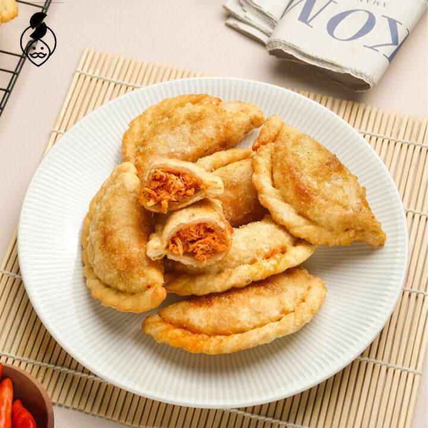
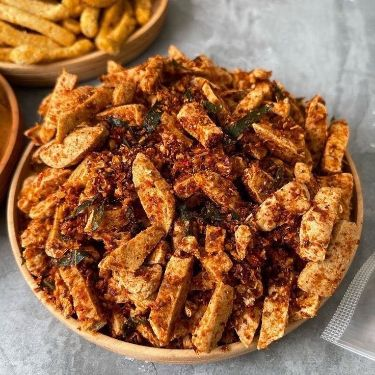
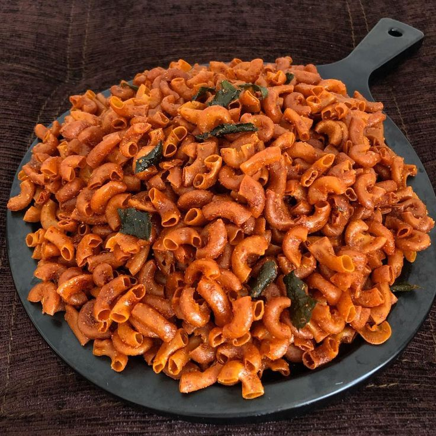

Menu
Resep
Seblak
Cireng
Ayam Geprek
Cemilan
Cireng
Camilan crispy ini terbuat dari aci yang digoreng dengan berbagai isian di dalamnya
Basreng
Camilan yang digoreng hingga renyah, dilapisi bumbu pedas dan daun jeruk
Makaroni Pedas
Cemilan yang bikin nagih! Makaroni berbalut bumbu pedas dan rempah pilihan